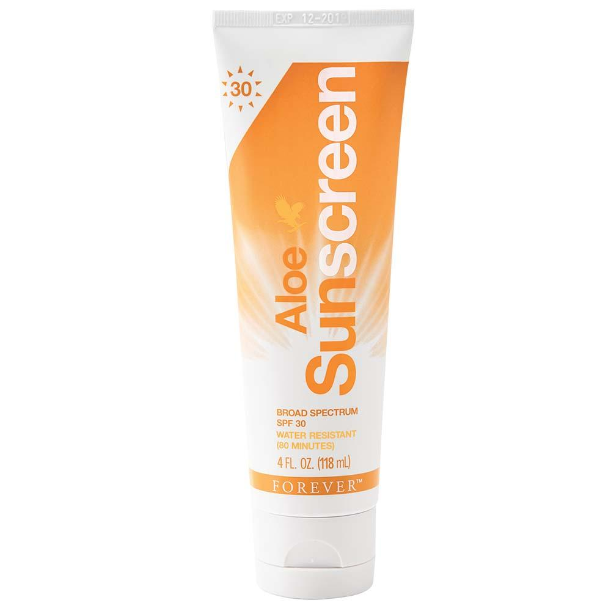

حماية كاملة للبشرة و ترطيبها
لا تترددي الان في الذهاب الى الشاطئ أو لقضاء يوم في المتنزه، فإن ألو صن سكرين يحمي عائلتك بأكملها.
هذه التركيبة ستحميك من الاشعة فوق البنفسجية الطويلة و المتوسطة و تبلغ نسبة الوقاية من الشمس 30 درجة. تشكل أشعة UVA 95٪ من الإشعاع الذي يصل إلى الأرض و التي تخترق الجلد بعمق وتلعب دورًا رئيسيًا في الشيخوخة وتشكيل التجاعيد.
أشعة UVB أكثر ضررًا لطبقات الجلد الخارجية وتسبب الاحمرار وحروق الشمس. تكون تأثيرات هذه الأشعة أكثر ضررًا في حالات الارتفاعات أوالثلج والجليد ، وفي بعض الحالات تضاعف التعرض.
ضع كمية وفيرة على جميع المناطق المكشوفة قبل 15-30 دقيقة من التعرض للشمس. أعد استخدامه عندما تشعر بجفاف الجلد، خلال 40 دقيقة من التعرض للماء أو على الأقل كل ساعتين.